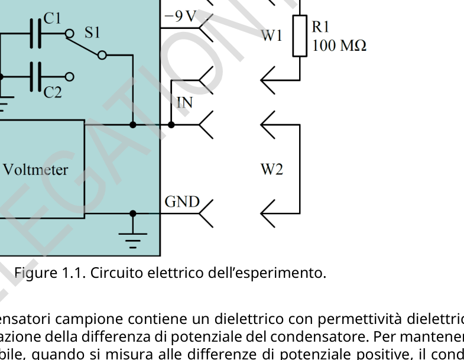

Experiment Q1-1 Italiano (Italy) Condensatori non ideali (10 punti) Questo esperimento è progettato per studiare le proprietà dei condensatori. La capacità del condensatore (che in questo testo significherà sempre capacità differenziale) può essere trovata dal suo grafico che riporta il processo di carica in funzione della sua differenza di potenziale U(t) attraverso il resistore R1. A seconda del circuito, è necessario trovare la relazione tra la corrente di carica del condensatore e la differenza di potenziale, I(U), e usarla per determinare la capacità: C(U) = dq dU= Idt dU= I(U) dU/dt. (1) Il circuito elettrico implementato in questo esperimento è mostrato in Fig. 1.1. L’interruttore S1 sulla scheda può essere utilizzato per commutare tra i condensatori C1 e C2. La posizione centrale dell’interruttore non ha alcun ruolo in questo esperimento e non deve mai essere utilizzata. Figure 1.1. Circuito elettrico dell’esperimento. Attenzione: uno dei condensatori campione contiene un dielettrico con permettività dielettrica che dipende dalla velocità di variazione della differenza di potenziale del condensatore. Per mantenere questa velocità il più stabile possibile, quando si misura alle differenze di potenziale positive, il condensatore dovrebbe essere caricato a partire da 9 V fino a -9 V, mentre le misurazioni alle differenze di potenziale negative dovrebbero essere fatte quando il condensatore è caricato a partire da -9 V verso 9 V. La capacità misurata può essere influenzata dallo stato precedente del condensatore, pertanto il condensatore deve essere mantenuto alla differenza di potenziale di partenza per almeno 10 s prima della misurazione. Parte A. Condensatori a temperatura ambiente (4.0 punti) Misurare e rappresentare graficamente la capacità dei condensatori C1 e C2 rispetto alla differenza di potenziale a temperatura ambiente (disegnare tutte le curve insieme sugli stessi assi).
Experiment Q1-2 Italiano (Italy) A.1 Misurare e costruire i grafici C1(U) e C2(U) nell’intervallo da -7 V a 7 V. Nel foglio risposte scrivere i valori di C1 e C2 a 0 V, 3 V, e 6 V. Annotare la formula utilizzata per calcolare la capacità dalle misurazioni grezze. Scrivere anche l’ID della scheda e la temperatura ambiente. 2.3pt A.2 Trovare la differenza di potenziale Umax change, alla quale la capacità del condensatore mostra la variazione relativa più rapida rispetto alla differenza di potenziale ( dC(U) C(U)dU). Nel foglio delle risposte scrivere quale condensatore (C1 o C2) presenta la variazione più rapida e la differenza di potenziale alla quale viene osservata. 0.5pt A.3 Quali sono le cariche q1 e q2 dei condensatori C1 e C2 a 6 V? 1.2pt Parte B. Taratura del termistore NTC (1.0 punti) Misurare la differenza B.1 Trovare la costante del termistore NTC R0. 1.0pt Parte C. Condensatori a diverse temperature (3.0 punti) C.1 Misurare e costruire i grafici C1(U) e C2(U) nell’intervallo da -7 V a 7 V alle temperature di 40 , 65 e 85 . 1.3pt C.2 Costruire i grafici C1(T) e C2(T) a 0 V e 6 V in funzione della temperatura dalla temperatura ambiente fino a 85 . 0.5pt C.3 Nel foglio risposte scrivere il rapporto C(85 ∘C)/C(40 ∘C) per entrambi i condensatori C1 e C2 a 0 V e 6 V. 1.2pt Parte D. Fonti di errori di misurazione (2.0 punti) Le attività precedenti in questo esperimento sono state eseguite in condizioni di lunga carica iniziale. Quando si osservano tempi di ricarica più brevi (0.1 - 10 s) possono esserci più fonti di errore:
- Corrente di dispersione.
- Proprietà di polarizzazione dei mezzi dielettrici del condensatore che possono essere spiegate tramite la dipendenza della permittività dielettrica dalla scala temporale del processo. Attenzione: il materiale termoisolante può assorbire l’umidità dell’aria e diventare conduttore. Rimuoverlo quando si eseguono misurazioni delle perdite. Determinare la principale fonte di errore per la misurazione di C1 e C2, poiché la dispersione del condensatore e le correnti di ingresso del voltmetro dipendono dalla differenza di potenziale, stimare questi errori a una differenza di potenziale vicina a 9 V. Decidere quali misurazioni ausiliarie e in quali condizioni devono essere eseguite per rispondere queste domande. Nelle tue risposte alle seguenti domande D.1
Experiment Q1-3 Italiano (Italy) e D.2, potresti indicare le condizioni delle tue misurazioni, quali quantità misuri e quali conclusioni trai sulla base delle tue misurazioni, come esemplificato nelle tabelle seguenti. Nota: questi sono solo degli esempi su come descrivere schematicamente le tue misurazioni; è necessario determinare da soli le condizioni rilevanti delle misurazioni. Esempi di come dovrebbero essere scritte le risposte alle domande D.1 e D.2: Esempio 1. Per mostrare che il tasso di variazione della differenza di potenziale di C1 collegato al circuito di misura è più veloce a 9 V che a 0 V. Possibili posizioni S1: C1, C2 Possibili connettore IN: +9V, -9V, GND, Libero Impostazioni iniziali: Posizione S1 Connettore IN C1 9V Processo: Numero del passo Posizione S1 Connettore IN Durata, s Variabile misurata 1 C1 Libero |duC(t)|/dt 2 C1 GND 3 C1 Libero |duC(t)|/dt Verifica: |duC(t)|/dt|1 > |duC(t)|/dt|3
Experiment Q1-4 Italiano (Italy) Esempio 2. Per mostrare che la velocità di variazione della differenza di potenziale di C1 a 9 V è maggiore della velocità di variazione media della differenza di potenziale a partire da 0 V in 1000 secondi. Possibili posizioni S1: C1, C2 Possibili connessione IN: +9V, -9V, GND, Libero Impostazioni iniziali: Posizione S1 Connettore IN C1 9V Processo: Numero del passo Posizione S1 Connettore IN Durata, s Variabile misurata 1 C1 Libero |duC(t)|/dt 2 C1 GND 3 C1 Libero uC 4 C1 Libero 1000 5 C1 Libero uC Verifica: |duC(t)|/dt|1 > (uC|3 D.1 Qual è la principale fonte di errore per la misurazione di C1(9 V)? Scrivere i passaggi di misurazione nelle tabelle. 1.0pt D.2 Qual è la principale fonte di errore per la misurazione di C2(9 V)? Scrivere i passaggi di misurazione nelle tabelle. 1.0pt
p.1 — Circuito elettrico dell’esperimento sui condensatori

Topic: Circuits, Electrostatics, Thermodynamics Metodi: Experimental Data Analysis, Differential Equations, Graph Linearization Competenze: Experimental Data Analysis, Graph Linearization, Error Propagation Objects: Capacitor, Resistor, Switch Fonte: Testo (PDF) — p.1 Soluzione: Soluzioni (PDF)
Experiments Q1-1 Italian (Italy) Non-ideal capacitors (10 points) This experiment is designed to study the properties of capacitors. The capacitance of the capacitor (which in this text will always mean differential capacity) can be found by its charging process graph based on its potential difference U(t) through the R1 resistor. Depending on the circuit, the relationship between the current of charge must be found the capacitor and the potential difference, I(U), and use it to determine the capacity: C(U) = dq DU= Idt dU= I(U) dU/dt. (1) The electrical circuit implemented in this experiment is shown in Fig. 1.1. The S1 switch on the board can be used to switch between C1 and C2 capacitors. The central position of the switch It has no role in this experiment and should never be used. The following information is provided: Electrical circuit of the experiment. Note: one of the sample capacitors contains a dielectric with dielectric permittivity that depends on the rate of change of the capacitor potential difference. To keep this The capacitor shall be capable of operating at a maximum speed of at least one minute. The power output of the system should be from 9 V to -9 V, while the power difference measurements Negatives should be made when the capacitor is charged from -9 V to 9 V. The measured capacity may be affected by the previous condition of the capacitor, therefore the capacitor The measurement shall be carried out at the start potential difference for at least 10 seconds before the measurement. Part A. The following conditions shall apply: Measure and graphically represent the capacitance of C1 and C2 capacitors relative to the difference in The potential at room temperature (draw all curves together on the same axis).
Experiments Q1-2 Italian (Italy) A.1 Measure and construct the graphs C1(U) and C2(U) in the range from -7 V to 7 V. In the paper For the answer, write the values of C1 and C2 at 0 V, 3 V, and 6 V. Note the formula used to calculate the capacity from raw measurements. Please also write the ID of the the temperature and the temperature. 2.3pt A.2 Find the Umax change potential difference, at which the capacitor capacity shows the relative change faster than the potential difference (dC(U) C(U)dU). In the reply sheet write as capacitor (C1 or C2) The rate of change is the fastest and the potential difference is the I’m not going to lie. 0.5pt A.3 What are the q1 and q2 loads of the C1 and C2 capacitors at 6 V? 1.2pt Part B. The NTC thermistor shall be measured at the level of the NTC thermistor. Measuring the Difference B.1 Find the constant of the NTC R0 thermistor. 1.0pt Part C. Condensers at different temperatures (3.0 points) C.1 Measuring and constructing the C1(U) and C2(U) graphs in the range from -7 V to 7 V at temperature di 40 , 65 e 85 . 1.3pt C.2 The graphs C1(T) and C2(T) are constructed at 0 V and 6 V depending on the temperature from the the ambient temperature is up to 85 . 0.5pt C.3 In the reply sheet write the ratio C(85 C)/C(40 C) for both C1 and C2 capacitors at 0 V and 6 V. 1.2pt The following is the list of the following: Sources of measurement errors (2.0 points) The previous activities in this experiment were performed under long initial load conditions. When shorter charging times (0.1 - 10 s) are observed, there may be several sources of error:
- Dispersion current.
- Polarization properties of the dielectric means of the capacitor which can be explained by the dependence of dielectric permittivity on the time scale of the process. Warning: the thermal insulating material can absorb moisture from the air and become conductive. Remove it when measuring losses. Determine the main source of error for measuring C1 and C2, since the dispersion of the capacitor and the input currents of the voltmeter depend on the potential difference, estimate these errors at a potential difference close to 9 V. Decide which auxiliary measurements and under what conditions The Commission is not prepared to accept the proposal. In your answers to the following questions D.1
Experiments Q1-3 Italian (Italy) and D.2, you could indicate the conditions of your measurements, the quantities you measure and the conclusions you draw. based on your measurements, as shown in the following tables. Note: these are only examples of how to describe your measurements schematically; you need to determine the relevant conditions of the measurements yourself. Examples of how the answers to questions D.1 and D.2 should be written: Example 1. To show that the rate of change of the C1 potential difference connected to the measurement is faster at 9 V than at 0 V. Possible positions S1: C1, C2 The following is the list of the types of connectors that can be used: The initial settings: The following items are added: The following information shall be provided: C1 9V The procedure: Number of the of the pass The following items are added: The following information shall be provided: Duration, s Variable measured 1 C1 Free ♪ I’m not going to be able to do it ♪ 2 C1 GND 3 C1 Free ♪ I’m not going to be able to do it ♪ The Commission has also adopted a proposal for a regulation on the protection of the environment.
Experiments Q1-4 Italian (Italy) Example two. To show that the change rate of the C1 to 9 V potential difference is greater than the average change rate of the difference in power starting at 0 V per 1000 seconds. Possible positions S1: C1, C2 The following conditions shall apply: The initial settings: The following items are added: The following information shall be provided: C1 9V The procedure: Number of the of the pass The following items are added: The following information shall be provided: Duration, s Variable measured 1 C1 Free ♪ I’m not going to be able to do it ♪ 2 C1 GND 3 C1 Free uC 4 C1 Free 1000 5 C1 Free uC Verifica: |duC(t)|/dt|1 > (uC|3 D.1 What is the main source of error for measuring C1(9 V)? Write the measurement steps in the tables. 1.0pt D.2 What is the main source of error for measuring C2(9 V)? Write the measurement steps in the tables. 1.0pt
p.1 — Circuito elettrico dell’esperimento sui condensatori
Topic: Circuits, Electrostatics, Thermodynamics Metodi: Experimental Data Analysis, Differential Equations, Graph Linearization Competenze: Experimental Data Analysis, Graph Linearization, Error Propagation Objects: Capacitor, Resistor, Switch Fonte: Testo (PDF) — p.1 Soluzione: Soluzioni (PDF)